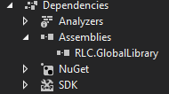

Multi-provider ICO data access layer using Dapper
Abstract class implementing Dapper database commands. An abstract IDbConnection property is passed in containing the provider and connection string to your database of choice. You will have the ability to use multiple providers or multiple connection strings from the same provider for a single request! Inherit this class within your cleint's service layer.
Static middleware component for setting the connection strings for each provider. The IOptions interface is used to map the appsettings.json database connection section from the client:
services.AddTransient(resolver =>
{
var databaseConnections = resolver.GetService>().Value;
var iDbConnections = resolver.GetServices();
databaseConnections.OracleConnections.ToList().ForEach(ora =>
{
ora.dbConnection = iDbConnections.Where(w => w.GetType() == typeof(OracleConnection)).FirstOrDefault();
ora.dbConnection.ConnectionString = ora.ConnectionString;
ora.Guid = Guid.NewGuid();
});
databaseConnections.MSSqlConnections.ToList().ForEach(sql =>
{
sql.dbConnection = iDbConnections.Where(w => w.GetType() == typeof(SqlConnection)).FirstOrDefault();
sql.dbConnection.ConnectionString = sql.ConnectionString;
sql.Guid = Guid.NewGuid();
});
return databaseConnections;
});
Add your providers and connection strings as follows:
"DatabaseConnections": {
"OracleConnections": [
{
"Alias": "Optional",
"ConnectionString": "Required"
},
{
"Alias": "Optional",
"ConnectionString": "Required"
}
],
"MSSqlConnections": [
{
"Alias": "Optional",
"ConnectionString": "Required"
}
]
}
Reference the Dapper_DAL data access layer project in your client:
Inherit the BaseService class in your service layer:
public class ArtistService : BaseService, IArtistService
{
...
}
Override the two abstract properties from the DAL project within your service layer:
protected override IDbConnection Connection { get; set; }
protected override string SQL { get; set; }
IDbConnection is the connection object passed into the DAL. SQL is the string object passed into the DAL if you want to use/set up generic CRUD methods such as:
protected override Artist Get(int id)
{
SQL = "Select * from dbo.Artist a where a.ArtistID = :id";
var result = base.Get(id);
return result;
}
Here's what the base method looks like in the DAL:
protected virtual T Get(int id) where T : class
{
var result = QueryFirstOrDefault(SQL, new { id });
return result;
}
Next, build your constructor for the service layer to inject the necessary dependencies:
public ArtistService(IMapper mapper, DatabaseConnections databaseConnections, IOracleParameterFactory parameterFactory)
{
_mapper = mapper;
_DatabaseConnections = databaseConnections;
_parameterFactory = parameterFactory;
Connection = _DatabaseConnections.MSSqlConnections.Where(alias => alias.Alias == "Music").FirstOrDefault().dbConnection;
}
IMapper(AutoMapper) is used to easily map the table entity class to your DTO(data transfer object) object. DatabaseConnections is the collection used to map the database connections in the appsettings.json file. IOracleParameterFactory is the class used to instantiate OracleDynamicParameters needed for parameterized queries.
The connection is being set in the constructor for this example. If you're planning to use more than one connection, set the Connection object inside the calling method. If you're planning to use more than one provider, bypass using the Connection object and the DAL all togther and simple call the Dapper methods directly in your service class with the DatabaseConnections class.
Here are some sample methods for your service layer calling the Dapper DAL:
public async Task> GetListAsync()
{
const string sql = "Select * from dbo.Artist";
var result = await QueryAsync(sql);
var mappedResult = _mapper.Map>(result);
return mappedResult;
}
public async Task GetFirstOrDefaultAsync(int id)
{
const string sql = "Select * from dbo.Artist a where a.ArtistID = @id";
var result = await QueryFirstOrDefaultAsync(sql, new { id });
var model = _mapper.Map(result);
return model;
}
public async Task DeleteAsync(decimal id)
{
const string sql = "Delete from dbo.Artist a where a.ArtistID = @id";
var result = await ExecuteAsync(sql, new { id });
return result;
}
public ArtistDto CallProcedure(string Id)
{
const string sql = "GET_ARTIST";
var param2 = _parameterFactory.CreateOracleParameters();
param2.Add("artistId", OracleDbType.Int32, ParameterDirection.Input, Id);
param2.Add("artist", OracleDbType.RefCursor, ParameterDirection.Output);
var result = QueryFirstOrDefault(sql, param2, null, null, CommandType.StoredProcedure);
var mappedResult = _mapper.Map(result);
return mappedResult;
}